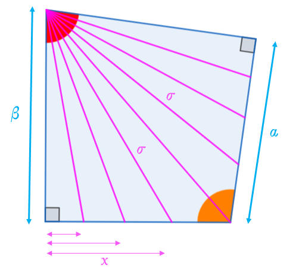

Επεξήγηση
Η εικόνα αναπαριστά τη στροφή μιας σκάλας, όπως αυτή φαίνεται από το ταβάνι. Το ζητούμενο είναι να υπολογιστούν τα μήκη σ και x. Ενδεικτικά έχουν απεικονιστεί 8 σκαλοπάτια, αλλά ο χρήστης μπορεί να αλλάξει τον αριθμό τους, αν το επιθυμεί.
⚠️ΠΡΟΣΟΧΗ⚠️ Οι τιμές που εξάγονται αφορούν μήκη πάνω σε ένα νοητό οριζόντιο επίπεδο. Δεν αφορούν τις αποστάσεις ανάμεσα από σκαλί σε σκαλί. Οι θέσεις που θα τοποθετηθούν τα σκαλιά (άρα και οι αποστάσεις ανάμεσα από σκαλί σε σκαλί) προκύπτουν από τις κατακόρυφους στα σημεία που προσδιορίζει ο παρών υπολογιστής.

Παράμετροι Υπολογισμού
📐 Αποτελέσματα
Γωνία σκαλοπατιών (κόκκινη πάνω αριστερά)
-
Γωνία τοίχου (πορτοκαλί κάτω δεξιά)
-